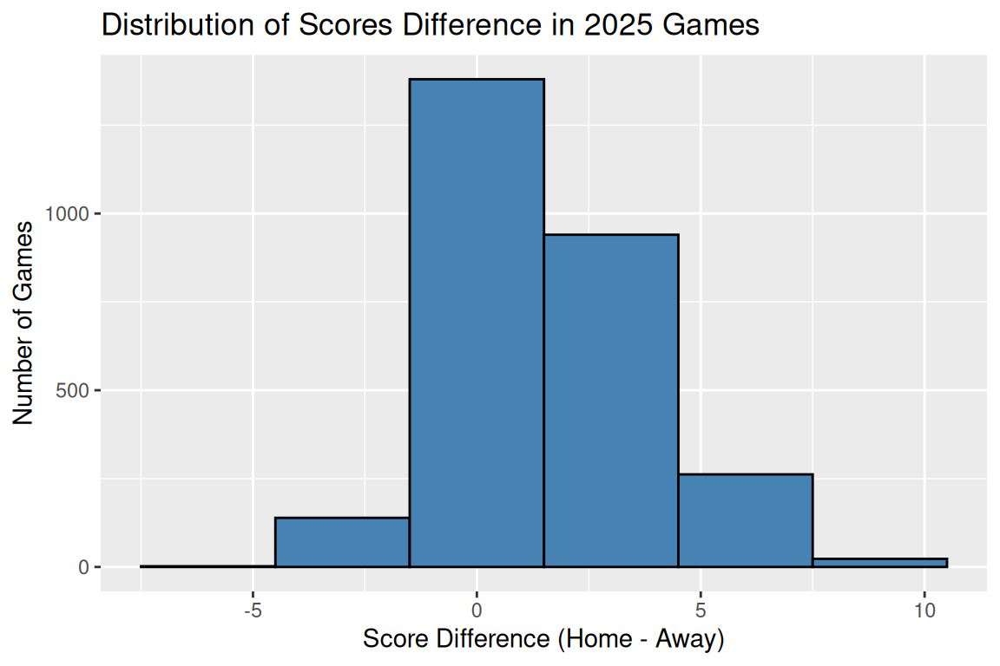
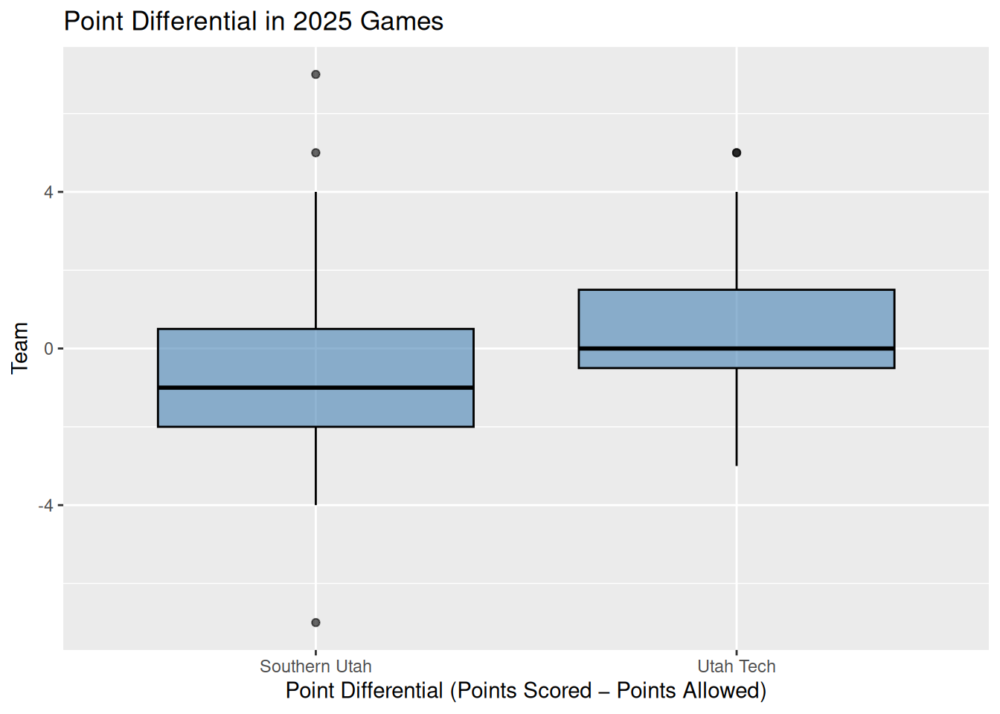

Due January 29, 2026
Focus: Notes 1-3
Total Points: 90 + 10 (Self-Critique Comment and Uploading to GitHub) = 100
Note that your homework should be completed in Quarto. You can just add your answers and code to this document in the appropriate part. The file should be rendered as an html document or pdf document (html is quicker to render and you will need an installation of LaTeX to render as a pdf). You will “turn in” this homework by uploading the files, the .qmd and output file, to your GitHub Math_3190_Assignment repository in the Homework/Homework_1 directory. Make sure all supporting files (if there are any) are in this directory as well. You should use git and Unix commands in a terminal for this (i.e. don’t manually upload files to GitHub). In addition, you will submit just your html or pdf file on Canvas to unlock the solutions.
Don’t forget to also put a self-critique comment on Canvas indicating what you did correctly and incorrectly and include any questions you may have about the assignment after submitting the assignment and thoroughly looking through the solutions.
library(tidyverse)
── Attaching core tidyverse packages ──────────────────────── tidyverse 2.0.0 ──
✔ dplyr 1.1.4 ✔ readr 2.1.6
✔ forcats 1.0.1 ✔ stringr 1.6.0
✔ ggplot2 4.0.1 ✔ tibble 3.3.1
✔ lubridate 1.9.4 ✔ tidyr 1.3.2
✔ purrr 1.2.1
── Conflicts ────────────────────────────────────────── tidyverse_conflicts() ──
✖ dplyr::filter() masks stats::filter()
✖ dplyr::lag() masks stats::lag()
ℹ Use the conflicted package (<http://conflicted.r-lib.org/>) to force all conflicts to become errors
Problem 1 (18 points)
In two different code chunks, write two functions called gghist and ggbox. The first code chunk is already given below, but you’ll need to add the second one. The gghist function should create a ggplot histogram of a variable that is given as a vector. The ggbox function should create a ggplot box plot when a single numeric vector is given or it should create side-by-side box plots if one numeric and one categorical variables are given. You can check if a vector is numeric with the is.numeric() function. Allow the user to indicate whether it should be horizontal or vertical box plots. Make sure you set echo and eval both to true for these code chunks. Also make sure to label the code chunks.
# we need at least xggbox =function(x, y =NULL, direction ="horizontal") { direction =tolower(direction)# check if direction is the right inputif (!direction %in%c("horizontal", "vertical")) {stop("Direction have to be either 'horizontal' or 'vertical'.") }# only numeric and no y variableif (is.numeric(x) &&is.null(y)) { df =tibble(value = x) p =ggplot(data = df, aes(x = value)) +geom_boxplot(color ="black", fill ="steelblue", alpha =0.6) }elseif (is.numeric(x) &&!is.null(y) &&!is.numeric(y)) { df =tibble(value = x,group =as.factor(y) ) p =ggplot(data = df, aes(x = value, y = group)) +geom_boxplot(color ="black", fill ="steelblue", alpha =0.6) } else {stop("Provide either 1 numeric vector, or a numeric and a categorical vectors.") }if (direction =="vertical") { p <- p +coord_flip() }return(p)}
Problem 2 (57 points)
Part a (6 points)
Learn about the built-in read.fwf()R function for use in downloading data from a URL into R. The widths and strip.white options will be especially useful here. Use this function to download the scores for all college basketball games for the 2024-2025 season http://kenpom.com/cbbga26.txt and then convert it to a tibble (load the tidyverse package first). The second team listed per line is the home team. It is not clear what the numbers, letters, or city names indicate after the second listed score. Notice that this is a “live” file that gets updated every day! So, your tibble size may change if you work on this assignment over the course of several days. That’s fine. Give the code you used to download these data in a labeled code chunk.
Now lets practice using our tidy data/tidyverse tools! Using your cbbga tibble, try doing the following. In each part, save the object as a new tibble (like cbbga2, cbbga3, etc) and in each subsequent part, use the tibble you created in the previous part.
Part b (2 points)
Use rename() to rename all of your variables to names that make sense. Then print the first six rows of the new tibble using the head() function.
# A tibble: 6 × 7
date away_team away_score home_team home_score number_of_ot location
<chr> <chr> <int> <chr> <int> <chr> <chr>
1 11/03/2025 McMurry 5 Abilene … 9 "" <NA>
2 11/03/2025 James Madison 7 Akron 8 "" <NA>
3 11/03/2025 North Dakota 6 Alabama 9 "" <NA>
4 11/03/2025 Blue Mountain 6 Alabama … 8 "" <NA>
5 11/03/2025 Florida 8 Arizona 9 "N" Las Veg…
6 11/03/2025 Southern 7 Arkansas 10 "" <NA>
Part c (2 points)
Use mutate() to create a new column that gives the score differences (home team score minus away team score). Then print the first six rows of the new tibble using the head() function.
Use select() to remove the extra variable(s) that had that irrelevant information at the end of each line. Note: you can select every variable except one by using !. Then print the first six rows of the new tibble using the head() function.
Use filter() to reduce the data down to only games played in 2025 (you could use the lubridate package for this, since it specializes in dealing with dates, but some base R packages will also work). Save this in a new tibble. We will use this tibble with only the 2025 years from here on out.
# change the date column to a date datatypecleaned_cbbga = cleaned_cbbga |>mutate(date =mdy(date))cbbga_2025 = cleaned_cbbga |>filter(year(date) ==2025)head(cbbga_2025)
Write a function that will filter the tibble to only games played by a given team. Demonstrate your function by displaying games played by SUU in 2025.
Use summarize() to extract SUU’s win/loss record and winning percentage for their 2025 games. Hint: using the case_when() function inside of a mutate() function to create a new variable that indicates whether SUU won or lost is helpful. You can verify on the Internet that SUU had 4 wins and 10 losses in 2025, so if your code retruns those values, you did it correctly.
# A tibble: 1 × 3
wins loss win_pct
<dbl> <dbl> <dbl>
1 4 10 0.286
Part j (7 points)
Generalize this by writing a function that will do this for a given team, and create a tibble with this information for all teams. Arrange this tibble first by winning percentage (descending) and by team (alphabetically) if there are any ties when it comes to winning percentage. A for loop and the add_row() function may be useful here.
With only the 2025 games, use the gghist() you wrote in Problem 1 on the score differences variable you created in part c. Add appropriate labels and a title to your graph. Also, use the #| fig-width:, #| fig-height:, #| out-width:, and #| fig-align: code chunk options to center the figure and then to adjust your figure to a size you like. Play around with different sizes to see what those options adjust.
gghist(cbbga_2025$difference_scores, 3) +labs(title ="Distribution of Scores Difference in 2025 Games",x ="Score Difference (Home - Away)",y ="Number of Games" )

Part l (9 points)
Filter the tibble with all 2025 games to only include Utah Tech or Southern Utah, then crate a tibble or data frame where each row is a game played by either team that has one column indicating the school, Utah Tech or Southern Utah, and a second column indicating the number of points that team played, regardless of whether the team was home or away. Then use your ggbox() function to create a side-by-side boxplot of number of points scored in all 2025 games for each team.
Note, this is a little challenging. The most straightforward way to do this is to use the pivot_longer() function with cols = the names of the two columns that have the away and the home teams (the names of these columns should not be in quotes, but they should be in a vector c()). Try to do this yourself first, but using AI for some help is fine.
Part m (5 points)
Create one more appropriate graphs for the 2025 basketball data. This graph could be anything you’d like as long as you use ggplot2, it shows something meaningful, and it is not the same as the graphs you made in parts k or l.
# How much the team score vs how much points they tookpoints_for_against = cbbga_2025 |>filter(home_team %in% suu_utu | away_team %in% suu_utu) |>select(home_team, home_score, away_team, away_score) |>pivot_longer(cols =c(home_team, away_team),names_to ="location",values_to ="team" ) |>mutate(points_scored =if_else(location =="home_team", home_score, away_score),points_allowed =if_else(location =="home_team", away_score, home_score),difference_points = points_scored - points_allowed ) |>filter(team %in% suu_utu) |>select(team, points_scored, points_allowed, difference_points)ggbox(x = points_for_against$difference_points, y = points_for_against$team, direction ="vertical") +labs(title ="Point Differential in 2025 Games",x ="Team",y ="Point Differential (Points Scored − Points Allowed)" )

Problem 3 (15 points)
Repeat parts b-e and g of Problem 2 using Python in Quarto. First, pass the original object that you read in from the website to Python without any changes to it (you do not need to read the file from the web in Python, but you can if you’d like) and then use pandas (or polars if you’d like) to rename the columns as indicated in part b, add the columns specified in part c, arrange the data as in part d, drop the “garbage” column as in part e, and filter it down as in part g. The pandas functions rename, assign (instead of mutate), drop (instead of select) and str.contains (used to select the right rows) will be useful here. Be sure to follow the guide in Notes 3 to properly install Python, install the pandas library and to load it in R.